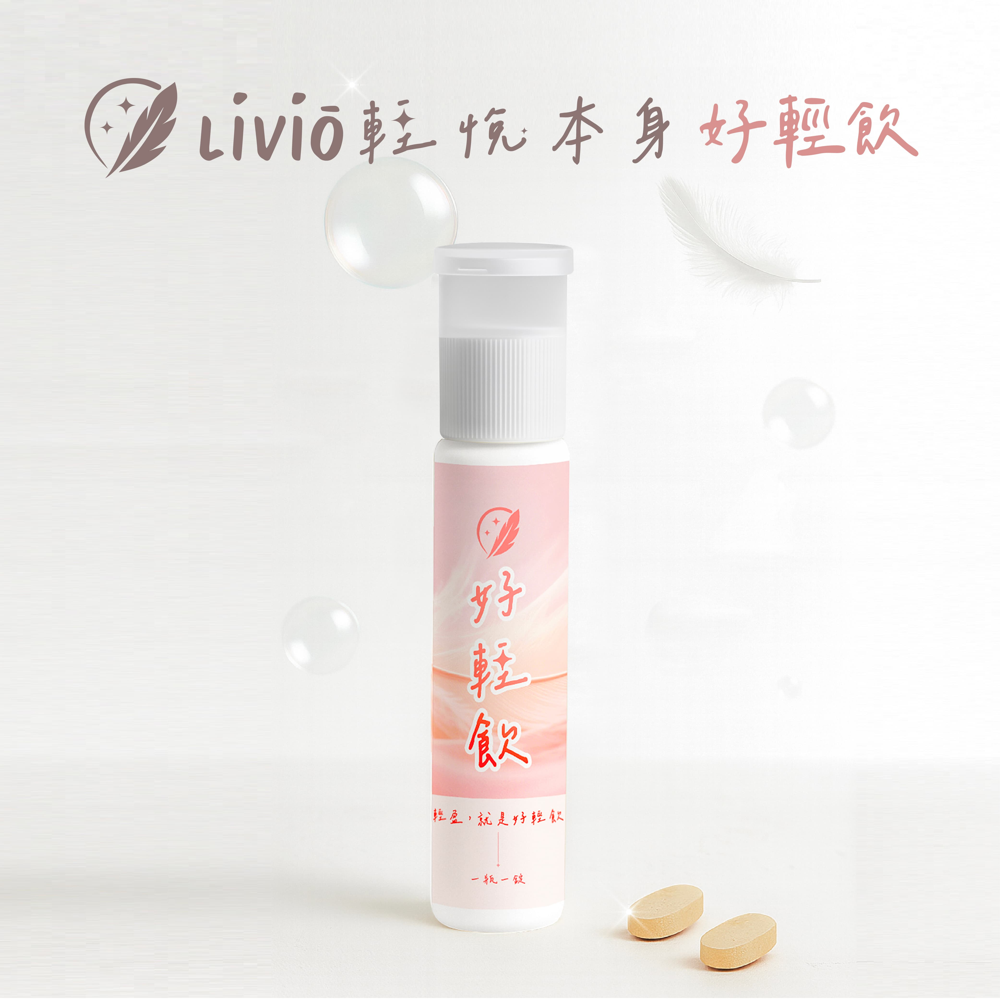

在步調快速的現代社會，上班族女性長期面臨工作壓力、外食習慣與生活忙碌等多重挑戰，維持消化道機能以及新陳代謝成為許多人的日常課題。
為此，民國114年9月正式創立的保健食品品牌「Liviō輕悅本身」，以「輕盈、喜悅、愛自己」三大理念為核心，針對飲食、睡眠、運動三大面向開發專業保健食品。
其中主打產品「一瓶一錠好輕飲」更以獨特的二合一設計與高效配方，為促進排便保健食品市場帶來革命性創新。
產品核心優勢：雙重型態設計與頂級原料的完美結合
作為專業的促進排便保健食品，「一瓶一錠好輕飲」的最大特色在於其創新設計：
兩顆錠劑搭配一瓶機能飲品。飲品與錠劑的雙重設計，提供分段式營養補給，協助全日穩定調整體質，並持續使排便順暢。
在成分方面，產品同時含有水溶性與非水溶性膳食纖維，這種多樣化的纖維組合能夠更全面地促進腸胃蠕動、維持腸道菌叢平衡。
更值得一提的是，產品採用日本生產的高純度乳酮糖，這項原料具有多項優勢：源自天然牛乳、純度高，且經過臨床實驗證實能改變菌叢生態，已通過日本特定保健食品認證。
乳酮糖的特殊之處在於它不被人體消化吸收，不會產生額外熱量，能直接抵達大腸供益菌利用，幫助好菌生長，使排便更加順暢。
這種成分在日本已有超過50年的食用歷史，安全性無庸置疑。
為什麼選擇Liviō輕悅本身：維持消化道機能保健食品的專業首選
對於正在尋找有效維持消化道機能保健食品的消費者來說，Liviō輕悅本身的「一瓶一錠好輕飲」提供了幾個關鍵優勢：
1. 創新劑型設計：結合立即作用的飲品與持續釋放的錠劑，解決單一型態保健食品效果不持久的問題。
2. 全方位腸道照顧：同時補充不同類型的膳食纖維，從多面向改善腸道環境，而非僅是暫時性的緩解症狀。
3. 國際頂級原料：採用通過日本特定保健食品認證的乳酮糖，確保產品的安全性與有效性。
4. 精準目標設計：專門針對女性外食上班族的生理需求，協助忙碌的女性使排便順暢，同時有效促進新陳代謝，是維持美麗與活力的理想輔助品。
